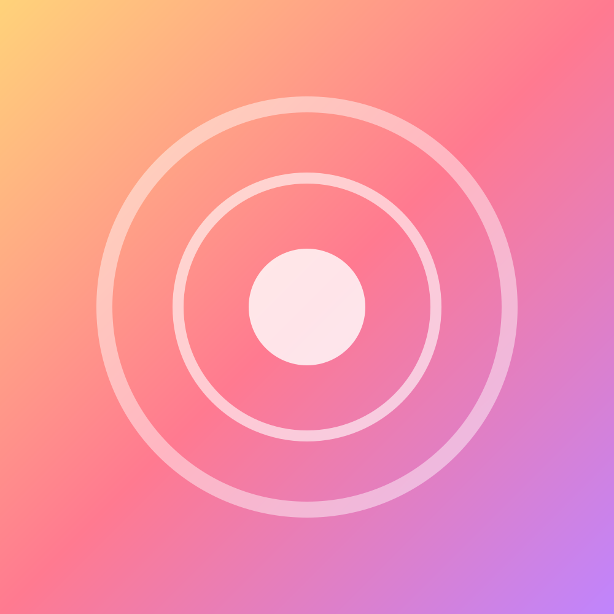

4 Nights 5 Days · 맛집 · 야경 · 쇼핑
너무 빡빡하지 않게, 먹고 걷고 야경 보는 겨울 상하이
Contents · 목차
일정, 예산, 숙소 후보 지역
하루씩 동선, 이동, 식사
샤오룽바오, 성젠, 훠궈
공항 이동법, 1인 예산 배분
결제, 인터넷, 옷차림
정해야 할 것들
Overview · 여행 한눈에 보기
기간
12/1 (화) – 12/5 (토)
도시
상하이 上海 + 주자자오 당일치기
1인 예산
항공 포함 · 2인 합계 240만 원
주 이동 수단
짧은 거리·밤에는 디디 택시
지하철 1·2·8·10호선이 모여 있어 이동이 편하고, 와이탄 야경까지 걸어서 갈 수 있어요. 숙박비 출발 전 확인
Part · 01
오전·오후·저녁 한 곳씩, 쉬는 시간은 넉넉하게
Itinerary · 전체 일정
푸둥공항 도착
난징동루 산책
와이탄 첫 야경
예원·성황묘
동방명주 전망
황푸강 야경 크루즈
주자자오 당일치기
저녁 신톈디
훠궈 디너
우캉루 카페 산책
톈쯔팡 골목
난징시루 쇼핑
성젠으로 아침
체크아웃
푸둥공항 출발
Day 1 · 12월 1일 (화)
비행 약 2시간, 시차 −1시간. 입국 후 유심/eSIM 개통 확인.
자기부상열차 + 지하철 2호선, 또는 디디 택시로 난징동루까지.
보행자 거리를 따라 걸으면 와이탄까지 약 15분.

예원 豫园Day 2 · 12월 2일 (수)
정원 관람 후 주변 상점가 구경. 오전 일찍 가야 덜 붐벼요.
해 질 무렵 전망대에 올라 낮과 야경을 한 번에. 대안: 상하이타워 上海中心.
배 위에서 와이탄과 루자쭈이를 양쪽으로 감상. 약 50분.
Day 3 · 12월 3일 (목)
인민광장 → 2호선 훙차오역 → 17호선 주자자오역. 평일이라 한적해요.
골목 따라 걷고, 나룻배 타고, 간식 먹으며 여유롭게.
석고문 건물을 개조한 거리에서 저녁과 산책.
Day 4 · 12월 4일 (금)
옛 프랑스 조계지의 가로수길. 카페에서 브런치.
좁은 골목에 공방, 소품숍, 작은 갤러리가 모여 있어요.
대형 쇼핑몰 구경하고, 마지막 밤 야경 한 번 더.
Day 5 · 12월 5일 (토)
숙소 근처 샤오양성젠에서 아침. 짐은 호텔에 맡기고 가볍게 산책.
출발 3시간 전 도착 목표. 주말이라 여유 있게 출발해요.
남은 위안화는 공항 면세점에서 쓰거나 알리페이 잔액만 확인.
Food · 꼭 먹을 것
얇은 피 안에 뜨거운 육즙. 숟가락에 올려 살짝 터뜨려 먹기.
바닥은 바삭, 속은 육즙 가득한 상하이식 군만두. 아침으로 딱.
추운 12월 저녁엔 뜨끈한 훠궈. 반반 냄비로 맵기 조절.
🕐 영업시간·지점 위치는 바뀔 수 있어요 출발 전 확인 · 인기 식당은 앱으로 대기 등록
Part · 02
교통 · 예산 · 체크리스트 · 주의사항 · 날씨
Transport · 교통 가이드
푸둥공항 → 룽양루 龙阳路, 약 8분. 창밖 속도계 구경은 덤.
편도 약 50위안 요금 확인룽양루역에서 2호선 → 난징동루·인민광장까지 약 25분.
약 5위안짐이 많거나 밤 도착이면 공항에서 바로 숙소까지.
약 50–60분 · 150–200위안알리페이 '교통카드(乘车码)' QR로 탑승. 역 입구마다 짐 검사가 있어요.
출퇴근 시간 피하기💡 지하철 한 번에 3–6위안 정도. 두 명이면 가까운 거리는 디디가 더 편할 때도 있어요 · 길찾기는 가오더지도 高德地图 추천
Budget · 1인 예산 120만 원
| 항목 | 내용 | 1인 (원) |
|---|---|---|
| 항공 | 인천–푸둥 왕복 시세 확인 | 350,000 |
| 숙박 | 4박, 2인 1실 분담 (1박 약 16만 원) | 320,000 |
| 식비 | 하루 약 4.4만 원 × 5일 | 220,000 |
| 교통 | 자기부상·지하철·디디 | 60,000 |
| 입장료 | 예원·전망대·크루즈 | 70,000 |
| 쇼핑 | 기념품·소품 | 100,000 |
| 예비비 | 여행자보험·eSIM·비상금 | 80,000 |
| 합계 | 1,200,000 |
환율 1위안 ≈ 190–200원 기준 출발 전 확인
Checklist · 출발 전 필수
Tips · 알아둘 것
결제·인터넷 관련 정책은 자주 바뀌어요 출발 전 확인
Weather · 12월 초 상하이
패딩 또는 두꺼운 코트. 바람막이 겸용이면 더 좋아요.
실내는 따뜻해서 니트·히트텍으로 겹쳐 입고 벗기 쉽게.
하루 1–2만 보 걷는 일정 · 접이식 우산 챙기기.
예년 평균 기준이에요 출발 일주일 전 예보 확인
Q & A · 의견 나누기
아래 세 가지만 같이 정하면 예약을 시작할 수 있어요
난징동루 vs 인민광장 vs 신톈디, 1박 예산은?
동방명주 vs 상하이타워, 아니면 크루즈만?
주자자오 당일치기 유지? 쇼핑 시간 더 늘릴까?